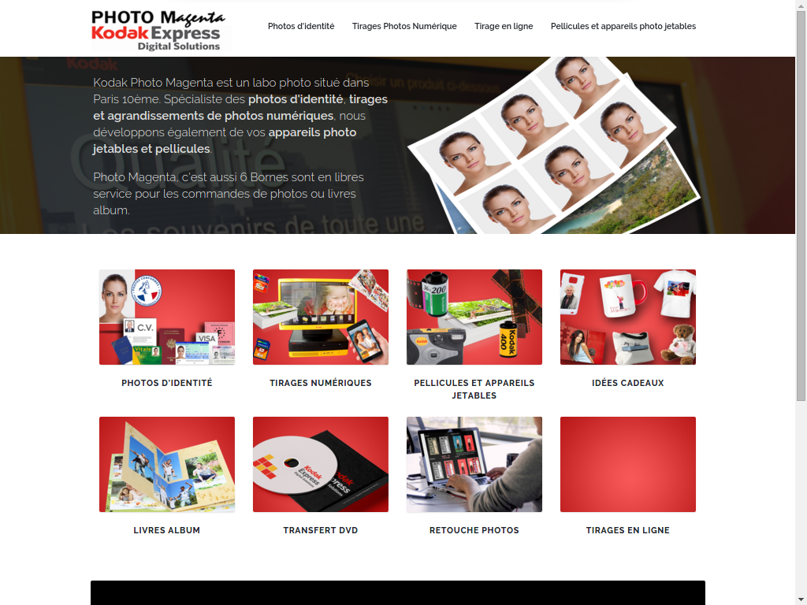

I worked on this website during my stage at Altilab. Club WTC Apex coaches firms for exporting abroad. This project was about copying their former website into a new one under Wordpress CMS because their old one can't be updated properly due to poor development practices.
Work Partner(s):
Altilab
Date:
March 2016
Languages / Libraries / CMS:
HTML - CSS - JS - Wordpress
Décodeur
This project was conducted for the afterwork organized at SIMPLonMars - it is a small game inspired from the Mastermind board game. Developped in Javascript, it gives you 13 tries to find the right code of 4 numbers !
Try it out here
Work Partner(s):
Anthony Perez & Marc Maignan
Date:
April 2016
Languages / Libraries / CMS:
HTML - CSS - JS - Git
Photo Magenta

Photo Magenta was a project conducted during my stage. Developped using a home-made CMS from Altilab, Profolio, this website was an interesting experience because they were sending non-formatted content and I had to learn some Photoshop/Illustrator basics in order to achieve a decent render.
Work Partner(s):
Altilab
Date:
March 2016
Languages / Libraries / CMS:
HTML - CSS - Profolio - Illustrator
Union Régionale des Fédérations de Centres Sociaux PACA
This website was built during my time at the SIMPLonMars formation for an organization : URFCS PACA. It's design is made to be very clear and easy to read. It also includes a document management plugin for their internal use that I tweaked in PHP, CSS and translated in French.
Work Partner(s):
Ahmed Nedjadi
Date:
March - June 2016
Languages / Libraries / CMS:
HTML - CSS - Wordpress - PHP
Organon Art Cie
This is the second project I made for an organization during SIMPLon. I took part in it half-way through to lend a hand, and worked on making the website more stable under Wordpress - making sure updates won't override changes made. This website made me polish my skills in Wordpress' PHP possibilities by setting up my own page and article generators.
Work Partner(s):
Anthony Perez & Jousna Kaisa
Date:
March - June 2016
Languages / Libraries / CMS:
HTML - CSS - Javascript - Wordpress
Snake
This is a small Snake-like game we developped using Paper.js during SIMPLonMars. Not very pretty... but fully functionnal when it comes to the controls of the game and the score.